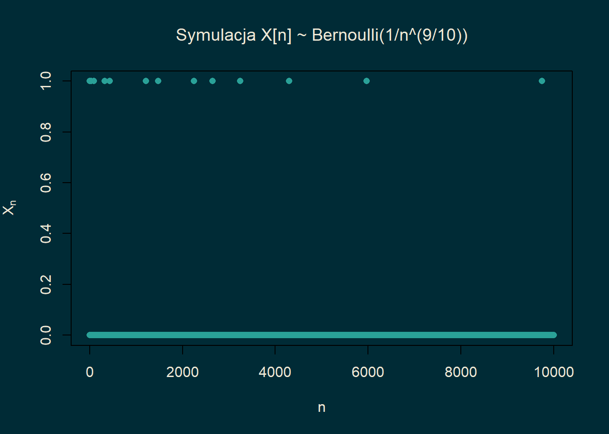

18 Rodzaje zbieżności zmiennych losowych
Ostatni omówiony przez nas przykład pokazuje, że jeżeli \(X_n\) jest liczbą otrzymanych orłów przy \(n\in \mathbb{N}\) rzutach symetryczną monetą, to \[\begin{equation*} X_n/n \approx 1/2. \end{equation*}\] Aby uściślić powyższą relację musimy omówić różne rodzaje zbieżności zmiennych losowych.
18.1 Zbieżność prawie na pewno
Definicja 18.1 Załóżmy, że \(\vec{X}_n\) jest ciągiem \(d\)-wymiarowych wektorów losowych. Mówimy, że \(\vec{X}_n\) zbiega do wektora losowego \(\vec{X}\) prawie na pewno, jeżeli \[\begin{equation*} \mathbb{P}\left[ \left\{\omega: \vec{X}_n(\omega)\to \vec{X}(\omega)\right\} \right]=1. \end{equation*}\] Piszemy wówczas \(\vec{X}_n\to \vec{X}\) p.n.
Zbieżność prawie na pewno jest koncepcyjnie najprostszym rodzajem zbieżności z jaką będziemy mieć do czynienia.
Przykład 18.1 Niech \(\Omega = [-1,1]\) z miarą Lebesgue’s. Rozważmy ciąg zmiennych losowych \(X_n(\omega) = \omega^n\). Wówczas dla \(X(\omega) =0\) mamy \[\begin{equation*} \left\{\omega: X_n(\omega)\to X(\omega)\right\} = (-1,1). \end{equation*}\] Przy czym \(\mathbb{P}[(-1,1)]=1\). Zbiór \(\{-1,1\}\) na którym zbieżność nie zachodzi ma prawdopodobieństwo zero. \(X_n\) zbiega zatem prawie na pewno do \(X\) Zauważmy jednak, że dla \(Y(\omega) = \mathbf{1}_{\{1\}}(\omega)\) mamy \[\begin{equation*} \left\{\omega: X_n(\omega)\to Y(\omega)\right\} = (-1,1]. \end{equation*}\] Zatem \(X_n\) zbiega prawie na pewno do \(Y\). Zmienne losowe \(X\) i \(Y\) są różne, ale miara probabilistyczna \(\mathbb{P}\) tej różnicy nie widzi. Mamy bowiem \[\begin{equation*} \left\{\omega: X(\omega) \neq Y(\omega)\right\} = \{1\} \end{equation*}\] co jest zbiorem o prawdopodobieństwie jeden.
Definicja 18.2 Niech \(\vec{X}\) i \(\vec{Y}\) będą wektorami losowymi. Powiemy, że \(\vec{X}\) jest prawie na pewno równy \(\vec{Y}\), jeżeli \[\begin{equation*} \mathbb{P}\left[ \left\{\omega: \vec{X}(\omega)= \vec{Y}(\omega)\right\} \right]=1. \end{equation*}\] Piszemy wtedy \(\vec{X}=\vec{Y}\) p.n.
Powyższa terminologia pozwala stwierdzić, że granica p.n. jest jedyna.
Lemma 18.1 Niech \(\{\vec{X}_n\}_{n\in \mathbb{N}}\) będzie ciągiem wektorów losowych. Jeżeli \(\vec{X}_n\) zbiega prawie na pewno do \(\vec{X}\) oraz \(\vec{X}_n\) zbiega prawie na pewno do \(\vec{Y}\), to \(\vec{X} = \vec{Y}\) p.n.
Proof. Pozostawiamy jako ćwiczenie. □
Przykład 18.2 Niech \(\{X_n\}_{n \in \mathbb{N}}\) będzie ciągiem zmiennych losowych takich, że \(X_n\) ma rozkład \(\mathrm{Exp}(n)\). Wówczas \[\begin{equation} \lim_{n \to \infty}\sqrt{n}X_n =0. \tag{18.1} \end{equation}\] Rzeczywiście, dla \(\epsilon>0\), \[\begin{equation*} \mathbb{P}\left[\sqrt{n}X_n>\epsilon \right] =\exp\left\{-\epsilon \sqrt{n}\right\}. \end{equation*}\] Dla dostatecznie dużego \(n\), prawa strona powyższej tożsamości jest mniejsza niż \(n^{-2}\). Z Lematu Borrela-Cantellego \[\begin{equation*} \mathbb{P}\left[ \sqrt{n} X_n >\epsilon \mbox{ dla niesk. wielu }n \right]=0. \end{equation*}\] Równoważnie \[\begin{equation*} \mathbb{P}\left[ \sqrt{n}X_n \leq \epsilon \mbox{ dla dużych }n \right]=1. \end{equation*}\] Ale \[\begin{equation*} \left\{ \sqrt{n}X_n \leq \epsilon \mbox{ dla dużych }n \right\}= \left\{ \limsup_{n \to \infty}\sqrt{n}X_n \leq \epsilon\right\}. \end{equation*}\] Reasumując \[\begin{equation*} \mathbb{P}\left[ \limsup_{n \to \infty}\sqrt{n}X_n \leq \epsilon\right] =1. \end{equation*}\] Rozważając teraz \(\epsilon \to 0\) i korzystając z ciągłości prawdopodobieństwa \[\begin{equation*} \mathbb{P}\left[ \limsup_{n \to \infty}\sqrt{n} X_n =0\right] =1. \end{equation*}\] Niech \[\begin{equation*} A=\left\{ \limsup_{n \to \infty}\sqrt{n}X_n =0\right\}. \end{equation*}\] Ale skoro \(X_n\geq 0\), to dla \(\omega \in A\), \[\begin{equation*} 0\leq \liminf_{n \to \infty}\sqrt{n} X_n(\omega) \leq\limsup_{n \to \infty}\sqrt{n} X_n(\omega) =0. \end{equation*}\] Czyli dla \(\omega \in A\), \[\begin{equation*} \lim_{n \to \infty}\sqrt{n} X_n(\omega) =0. \end{equation*}\] Pokazaliśmy właśnie, że \[\begin{equation*} A \subseteq \left\{\omega \: : \: \lim_{n \to \infty}\sqrt{n} X_n(\omega) =0 \right\} \end{equation*}\] Skoro \(\mathbb{P}[A]=1\), to \[\begin{equation*} \mathbb{P} \left[\left\{\omega \: : \: \lim_{n \to \infty}\sqrt{n} X_n(\omega) =0 \right\}\right]=1. \end{equation*}\] Czyli (18.1) rzeczywiście zachodzi. Zbieżność możemy zaobserwować również na symulacjach.
# Ustawienie liczby obserwacji
n_vals <- 1:10000
# Wygeneruj zmienne losowe X_n ~ Exp(n)
#set.seed(123) # dla powtarzalności
X_n <- rexp(length(n_vals), rate = n_vals)
# Oblicz sqrt(n)* X_n
ratios <- sqrt(n_vals) * X_n
# Ustawienia kolorystyczne (Solarized)
bg_color <- "#002b36"
fg_color <- "#eee8d5"
primary_color <- "#2aa198"
par(bg = bg_color)
# rysowanie wykresu
plot(n_vals, ratios,
type = "l",
col = primary_color,
xlab = "n",
ylab = expression(sqrt(n)*X[n]),
col.lab = fg_color,
col.main = fg_color,
col.axis = fg_color,
fg = fg_color,
panel.first = grid())Twierdzenie 18.1 Jeżeli \(\vec{X}_n \overset{{\rm p.n.}}{\to} \vec{X}\) i \(\vec{Y}_n \overset{{\rm p.n.}}{\to} \vec{Y}\), to
- \(a\vec{X}_n + b\vec{Y}_n \overset{{\rm p.n.}}{\to} a\vec{X}+b\vec{Y}\).
- \(\langle \vec{X}_n,\vec{Y}_n \rangle \overset{{\rm p.n.}}{\to} \langle\vec{X},\vec{Y}\rangle\).
Proof. Ćwiczenie. □
18.2 Zbieżność według prawdopodobieństwa
Drugim omawianym przez nas rodzajem zbieżności będzie znana z kursu miary i całki zbieżność według miary. Z racji, że operujemy wyłącznie na miarach probabilistycznych dostosujemy nieznacznie terminologię.
Definicja 18.3 Niech \(\{\vec{X}_n\}_{n \in \mathbb{N}}\) będzie ciągiem wektorów losowych. Powiemy, że \(\vec{X}_n\) zbiega do \(\vec{X}\) według prawdopodobieństwa, jeżeli dla każdego \(\varepsilon >0\), \[\begin{equation*} \lim_{n\to \infty} \mathbb{P}\left[ \left\{\omega: \left\| \vec{X}_n(\omega) - \vec{X}(\omega) \right\| > \varepsilon\right\} \right] = \lim_{n\to \infty}\mathbb{P}\left[\left\| \vec{X}_n - \vec{X}\right\| > \varepsilon \right] = 0. \end{equation*}\] Piszemy wówczas \(\vec{X}_n \overset{\mathbb{P}}{\to} \vec{X}\).
Zbieżność według prawdopodobieństwa mówi, że z dużym prawdopodobieństwem \(\vec{X}_n\) jest bliski \(\vec{X}\).
Przykład 18.3 Niech \(\{X_n\}_{n \in \mathbb{N}}\) będzie ciągiem zmiennych losowych takich, że \(X_n\) ma rozkład \(\mathrm{Exp}(n)\). Wówczas \[\begin{equation} \lim_{n \to \infty}\sqrt{n}X_n =0 \end{equation}\] według prawdopodobieństwa. Rzeczywiście, dla \(\epsilon>0\), \[\begin{equation*} \mathbb{P}\left[\sqrt{n}X_n>\epsilon \right] =\exp\left\{-\epsilon \sqrt{n}\right\}\to 0. \end{equation*}\]
Twierdzenie 18.2 Jeżeli \(\vec{X}_n \overset{{\rm p.n.}}{\to} \vec{X}\), to \(\vec{X}_n \overset{\mathbb{P}}{\to} \vec{X}\).
Proof. Bez zmieszania ogólności załóżmy, że rozważane wektory losowe są jednowymiarowe. Załóżmy, że \(X_n \overset{{\rm p.n.}}{\to} X\). Ustalmy \(\varepsilon >0\). Przypomnijmy, że zbieżność punktowa oznacza, że dla prawie każdej \(\omega\) zachodzi \[ \exists_m \ \forall_{ n\ge m} \ \ |X_n(\omega) - X(\omega)| < \varepsilon, \] a więc w terminach zbiorów \[ \mathbb{P}\left[ \bigcup_{m=1}^\infty \bigcap_{n=m}^\infty \left\{ \omega: \left| X_n(\omega) - X(\omega) \right|<\varepsilon \right\} \right] = 1. \] Ciąg zdarzeń \[ A_m = \bigcap_{n=m}^\infty \left\{ \omega: \left| X_n(\omega) - X(\omega) \right|<\varepsilon \right\} \] jest wstępujący. Zatem \[ 1= \mathbb{P} \left[ \bigcup_{m=1}^\infty A_m \right] = \lim_{m\to \infty} \mathbb{P}[A_m]. \] Zauważmy, że \(A_m\subset \{ |X_m-X| < \varepsilon \}\), a więc \[ \lim_{m\to \infty} \mathbb{P}\left[|X_m-X|<\varepsilon \right] = 1 \] a zatem \[ \lim_{m\to \infty} \mathbb{P}\left[|X_m-X|\ge\varepsilon \right] = 0 \] co pokazuje zbieżność \(X_m\) do \(X\) według prawdopodobieństwa. □
Implikacja odwrotna nie jest prawdziwa.
Przykład 18.4 Na przestrzeni probabilistycznej \(([0,1], \mathcal{B}or([0,1]),{\rm Leb})\) definiujemy ciąg zmiennych losowych:
Kolejne zmienne losowe definiujemy w analogiczny sposób: jeżeli \(2^n \le k < 2^{n+1}\), to \[ X_k = {\bf 1}_{[ \frac{k-2^n}{2^n}, \frac{k-2^n+1}{2^n} )} \] Powyższy ciąg zmiennych losowych zbiega do \(0\) według prawdopodobieństw (bo miara zbioru na którym \(X_k\) jest niezerowe zbiega do zera), ale nie zbiega prawie na pewno (bo dla każdego punktu \(\omega\in [0,1]\) nieskończenie elementów \(X_k(\omega)=1\)).
Przykład 18.5 Rozważmy jeszcze jeden przykład. Niech \(\{p_n\}_{n \in \mathbb{N}}\) będzie dowolnym ciągiem liczb z przedziału \([0,1]\). Niech \(\{X_n\}_{n \in \mathbb{N}}\) będzie nieskończonym ciągiem niezależnych zmiennych losowych takich, że \[\begin{equation*} \mathbb{P}[X_n=1] = 1-\mathbb{P}[X_n=0]=p_n. \end{equation*}\] Zbadamy zbieżność \(\{X_n\}_{n \in \mathbb{N}}\) w zależności od zachowania ciągu \(\{p_n\}_{n \in \mathbb{N}}\). Zauważmy, że dla \(\epsilon\in (0,1)\) mamy \[\begin{equation*} \mathbb{P}[|X_n|>\epsilon] = \mathbb{P}[X_n=1]=p_n. \end{equation*}\] W szczególności \(X_n \to^\mathbb{P} 0\) wtedy i tylko wtedy, gdy \(p_n \to 0\). Jeżeli więc \(\sum_{n}p_n <\infty\), to dla prawie każdej \(\omega\) w ciągu \(\{X_n(\omega)\}_{n\in \mathbb{N}}\) będzie skończenie wiele jedynek. Oznacza to, że to \(X_n \to 0\) p.n. Jeśli \(\sum_n p_n =\infty\), to dla prawie każdej \(\omega\) w ciągu \(\{X_n(\omega)\}_{n\in \mathbb{N}}\) będzie nieskończenie wiele jedynek. Oznacza to, że jeżeli \(p_n \to 0\) ale \(\sum_n p_n=\infty\), to \(X_n \to^\mathbb{P} 0\) ale zbieżność nie będzie zachodziła według prawdopodobieństwa. Warto w tym momencie rzucić okiem na symulacje aby zobaczyć jak wygląda ciąg \(\{X_n(\omega)\}_{n\in \mathbb{N}}\) w różnych przypadkach.
Jeżeli \(\sum_{n}p_n<\infty\), jak to ma miejsce dla \(p_n = n^{-11/10}\), to od pewnego miejsca \(\{X_n(\omega)\}_{n\in \mathbb{N}}\) jest ciągiem stale równym zero.
n_vals <- 1:10000
p_n <- 1 / n_vals^(11/10)
set.seed(123)
X_n <- rbinom(length(n_vals), size = 1, prob = p_n)
# Kolory Solarized
bg_color <- "#002b36"
fg_color <- "#eee8d5"
primary_color <- "#2aa198"
# Ustawienia tła
par(bg = bg_color)
# Wykres punktowy (większość to zera!)
plot(n_vals, X_n,
type = "p",
pch = 16,
col = primary_color,
xlab = "n",
ylab = expression(X[n]),
main = expression(paste("Symulacja X[n] ~ Bernoulli(1/n^(11/10))")),
col.lab = fg_color,
col.main = fg_color,
col.axis = fg_color)Jeżeli \(\sum_n p_n =\infty\) ale \(p_n \to 0\), jak to ma miejsce dla \(p_n = n^{-9/10}\), to w ciągu \(\{X_n(\omega)\}_{n\in \mathbb{N}}\) obserwować będziemy nieskończenie wiele jedynek, lecz odległości między kolejnymi jedynkami będą stawały się coraz większe. Innymi słowy częstotliwość jedynek będzie spadała do zera.
 Załóżmy dla ustalenia uwagi, że \(p_n=n^{-9/10}\). Zauważmy, że jeżeli rozważmy deterministyczny podciąg \(\{X_{n^2}\}_{n \in \mathbb{N}}\), to \(p_{n^2} = n^{-18/10}\). Z powyższej dyskusji wynika, że \(X_{n^2} \to 0\) p.n.
Powyższa symulacja tłumaczy co się dzieje. W pełnym ciągu \(\{X_n(\omega)\}_{n}\) widzimy nieskończenie wiele jedynek. Podciąg złożony w kwadratów liczb naturalnych jest rozłożony na tyle rzadko, że prawdopodobieństwo, że jedynka trafi się akurat w kwadracie liczby naturalnej jest bardzo małe. Ostatecznie w odpowiednio rzadkim podciągu \(\{X_{n^2}(\omega)\}_n\) widzimy tylko skończenie wiele jedynek.
Zjawisko z poprzedniego przykładu można uogólnić.
Twierdzenie 18.3 (Twierdzenie Riesza) Jeżeli \(X_n \overset{\mathbb{P}}{\to} X\), to istnieje podciąg \(\{X_{n_k}\}_{k\in \mathbb{N}}\) taki, że \(X_{n_k} \overset{{\rm p.n}}{\to} X\).
Proof. Z definicji zbieżności według prawdopodobieństwa dla każdego \(k\) istnieje \(n_k\) takie, że \[ \mathbb{P}\left[ |X_n-X| > 2^{-k} \right] \le 2^{-k}\qquad \forall n\ge n_k. \] Możemy ponadto założyć, że ciąg \(n_k\) jest rosnący. Zatem \[ \sum_{k=1}^{\infty} \mathbb{P}\left[ |X_{n_k} - X| > 2^{-k} \right] <\infty. \] Możemy więc skorzystać z lematu Borela-Cantellego \[ \mathbb{P}\left[ |X_{n_k} - X| > 2^{-k},\ {\rm i.o.} \right] = 0. \] Wynika więc stąd, że \(|X_{n_k}(\omega) - X(\omega)| > 2^{-k}\) zachodzi jedynie skończenie wiele razy dla prawie każdej \(\omega\). Zatem \[ |X_{n_k}(\omega) - X(\omega)| \le 2^{-k} \qquad \mbox{ dla } k>k(\omega) \] a stąd wynika \(X_{n_k} \overset{{\rm p.n.}}{\to} X\).
18.3 Zbieżność w \(L^p\)
Zauważmy, że ze zbieżności według prawdopodobieństwa lub prawie na pewno \(X_n\) do \(X\) nie wynika, że \[\begin{equation*} \lim_{n\to \infty}\mathbb{E}\left[ |X_n|^p \right] =\mathbb{E} \left[|X|^p \right]. \end{equation*}\] Dzieje się tak dlatego, że zbieżność prawie na pewno czy według prawdopodobieństwa mówią tylko, że z dużym prawdopodobieństwem \(X_n\) jest bliskie \(X\). Nie jest jasne co się dzieje na zbiorze o małym prawdopodobieństwie, gdzie \(X_n\) jest dalekie od \(X\). Odległość ta może być bardzo duża.
Definicja 18.4 Niech \(p\geq 1\). Powiemy, żę \(X_n\) zbiega do \(X\) w \(L^p\), jeżeli \(X_n\in L^p\) (tzn. \(\|X_n\|_p =\mathbb{E} [|X_n|^p]^{1/p}<\infty\)) oraz \[ \lim_{n\to \infty}\|X_n-X\|_p = \lim_{n\to \infty}\mathbb{E}\left[|X_n-X|^p\right]^{1/p} = 0. \] Piszemy wówczas \(X_n \overset{L^p}{\to} X\).
Przykład 18.6 Rozważmy przestrzeń probabilistyczną \(([0,1], \mathcal{B}or([0,1]), \mathrm{Leb})\). Rozważmy zmienne losowe \(X_n = n^{\alpha} \mathbf{1}_{[0,1/n]}\). Wówczas \(X_n \to 0\) p.n. Dla \(p\geq 1\) mamy \[\begin{equation*} \|X_n-0\|_p^p = \mathbb{E}[|X_n|^p] = n^{\alpha p-1}. \end{equation*}\] zbieżność zachodzi więc dla \(p<1/\alpha\).
Twierdzenie 18.4 Jeżeli \(X_n \overset{L^p}{\to} X\), to \(X_n \overset{\mathbb{P}}{\to} X\). Implikacja odwrotna nie jest prawdziwa.
Proof. Z nierówności Czebyszewa wynika, że \[ \mathbb{P}\big[ |X_n - X| > \varepsilon \big] \le \frac{\mathbb{E}|X_n-X|^p}{\varepsilon^p} \to 0. \]
18.4 Słabe prawo wielkich liczb
Twierdzenie 18.5 (Słabe Prawo Wielkich Liczb (SPWL)) Jeżeli ciąg zmiennych losowych \(X_1,X_2,\ldots\) spełnia \(\mathbb{E}[ X_i^2]<\infty\), zmienne losowe są nieskorelowane oraz mają wspólnie ograniczoną wariancję: \[\begin{equation*} \sup_{n \in \mathbb{N}} \mathbb{V}ar[X_n] <\infty \end{equation*}\] to \[ \frac{X_1+\ldots + X_n - \mathbb{E}[X_1+\ldots + X_n]}{n} \overset{L^2}{\to} 0. \] W szczególności jeżeli wszystkie zmienne losowe \(X_i\) mają taką samą wartość oczekiwaną, to \[ \frac{X_1+\ldots + X_n}{n} \overset{\mathbb{P}}{\to} \mathbb{E} [X_1]. \]
Proof. Mamy
\[\begin{align*}
&\left\| \frac{X_1+\ldots + X_n - \mathbb{E}[X_1+\ldots + X_n]}{n} \right\|_2^2 =\\
&\mathbb{V}ar\bigg( \frac{X_1+\ldots + X_n}{n} \bigg)
= \frac{1}{n^2} \mathbb{V}ar(X_1+\ldots + X_n)\\
&= \frac{1}{n^2}\sum_{k=1}^n \mathbb{V}ar[ X_k]
\leq \frac{C}{n}\to 0.
\end{align*}\]
Wkrótce pokażemy znacznie mocniejszy wynik: Mocne Prawo Wielkich Liczb (MPWL), które mówi o zbieżności p.n.
Przykład 18.7 Niech \(X_1,X_2,\ldots\) będą niezależnymi zmiennymi losowymi o rozkładzie \(U([-1,1])\). Wówczas zmienne losowe \(X^2_1,X^2_2,\ldots\) są niezależne oraz \[ \mathbb{E} X_i^2 =\int_{-1}^1 x^2 \frac{dx}2 = \frac 13, \qquad \mathbb{V}ar X_i^2 \le \mathbb{E} X_i^4 \le 1. \] Możemy więc skorzystać z SPWL: \[ \frac{X_1^2+\ldots + X_n^2}{n} \overset{\mathbb{P}}{\to} \frac 13.\] Ustalmy \(\varepsilon\in (0,1/2)\) i zdefiniujmy \[A_{n,\varepsilon} =\bigg\{ x\in\mathbb{R}^n:\; (1-\varepsilon) \sqrt{\frac n3} \le \|x\| \le (1+\varepsilon) \sqrt{\frac n3} \bigg\} \]
Wówczas \[\begin{align*} \frac 1{2^n}\cdot {\rm Leb(A_{n,\varepsilon} \cap [-1,1]^n)} & = \mathbb{P}\big[ (X_1,\ldots, X_n) \in A_{n,\varepsilon} \big]\\ &= \mathbb{P}\bigg[ (1-\varepsilon) \sqrt{\frac n3} \le \sqrt{X_1^2+\ldots + X_n^2} \le (1+\varepsilon) \sqrt{\frac n3} \bigg]\\ &= \mathbb{P}\bigg[\frac 13 (1-2\varepsilon+\varepsilon^2) \le \frac{X_1^2+\ldots + X_n^2}n \le \frac 13 (1+2\varepsilon + \varepsilon^2) \bigg]\\ &\ge \mathbb{P}\bigg[ \bigg| \frac 1n \sum_{i=1}^n X_i^2 - \frac 13 \bigg| \le \frac 13(2\varepsilon - \varepsilon^2) \bigg] \to 1. \end{align*}\] Ten rachunek pokazuje, że niemal cała masa kostki \([-1,1]^n\) pochodzi z \(A_{n,\varepsilon}\), czyli ‘pogrubionego’ brzegu sfery o środku 0 i promieniu \(\sqrt{n/3}\).